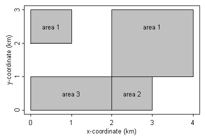
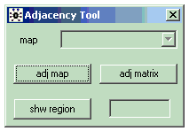
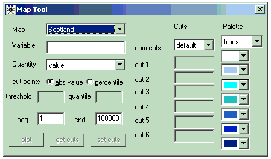
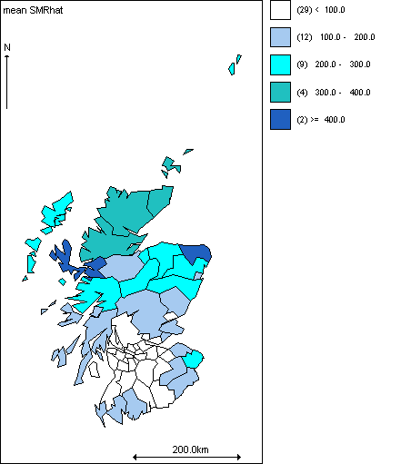

![[manual0]](manual0.bmp) GeoBUGS User Manual
GeoBUGS User Manual
Version 3.2.3, March 2014
Andrew Thomas 1 Nicky Best 2 Dave Lunn 2
Richard Arnold 3 David Spiegelhalter 4
1 Dept of Mathematics & Statistics,
University of St Andrews
St Andrews
Scotland
2 Department of Epidemiology & Public Health,
Imperial College School of Medicine,
Norfolk Place,
London W2 1PG, UK
3 School of Mathematical and Computing Sciences
Victoria University,
P. O. Box 600, Wellington,
New Zealand
4 MRC Biostatistics Unit,
Institute of Public Health,
Robinson Way,
Cambridge CB2 2SR, UK
e-mail: bugs@mrc-bsu.cam.ac.uk [general]
helsinkiant@gmail.com [technical]
internet: http://www.mrc-bsu.cam.ac.uk/bugs
Contents
Introduction
Importing map polygon files
Splus format
ArcInfo format
Epimap format
ArcView format
Loading a polygon file into GeoBUGS
Exporting maps from GeoBUGS into Splus format
Producing adjacency matrices
Editing adjacency matrices
Producing maps
User-specified cut-points and shading
Identifying individual areas on a map
Copying and saving maps
Spatial distributions
car.normal and car.l1
car.proper
spatial.exp and spatial.disc
spatial.pred and spatial.unipred
pois.conv
mv.car
Temporal distributions
Using car.normal as a random walk prior for
temporal smoothing
Examples
Conditional Autoregressive (CAR) models for disease mapping:
Lip cancer in Scotland
Convolution priors: Lung cancer in a
London Health Authority
Proper CAR model: Lip cancer revisited
Bayesian kriging and spatial prediction: Surface elevation
Poisson-gamma spatial moving average (convolution) model:
Distribution of hickory trees in Duke forest
Poisson-gamma spatial moving average (convolution) model:
Ecological regression of air pollution and respiratory
illness in children
Intrinsic multivariate CAR prior for mapping multiple
diseases:Oral cavity cancer and lung cancer in
West Yorkshire (UK)
Shared component for mapping multiple diseases:
Oral cavity cancer and lung cancer in
West Yorkshire (UK)
Random walk priors for temporal smoothing of
daily air pollution estimates
Appendix 1: Technical details of
Structured Multivariate Gaussian
and Conditional Autoregressive (CAR) models
and hyperprior specification
Joint specification
Conditional specification
Intrinsic CAR model
Proper CAR model
Intrinsic Multivariate CAR model
Appendix 2: Technical details of the
Poisson-gamma Spatial Moving Average
convolution model
References
Introduction [top]
GeoBUGS is an add-on module to WinBUGS which provides an interface for:
* producing maps of the output from disease mapping and other spatial models
* creating and manipulating adjacency matrices that are required as input for the
conditional autoregressive models available in OpenBUGS for carrying out
spatial smoothing.
GeoBUGS contains map files for
* Districts in Scotland (called Scotland )
* Wards in a London Health Authority (called London_HA )
* Counties in Great Britain (called GB_Counties )
* Departements in France (called France )
* Nomoi in Greece (called Greecenomoi )
* Districts in Belgium (called Belgium )
* Communes in Sardinia (called Sardinia )
* Subquarters in Munich (called Munich )
* A 15 x 15 regular grid (called Elevation )
* Wards in West Yorkshire (UK) (called WestYorkshire )
* A 4 x 4 regular grid (called Forest )
* A grid of 750 m 2 grid cells covering the town of Huddersfield and surroundings in
northern England (called Huddersfield_750m_grid)
A list of the area IDs for each map and the order in which the areas are stored in the map file can be obtained using the export Splus command.
GeoBUGS also has facilities for importing user-defined maps reading polygon formats from Splus , ArcInfo and Epimap , plus a link to a program written by Yue Cui for importing ArcView shape files.
Importing map polygon files [top]
Polygon files can be imported into GeoBUGS from a variety of other packages:
* Splus
* ArcInfo
* Epimap
* ArcView
Import files are text files containing:
* Number of regions in the map
* List of labels for each region, with corresponding ID number
* List of x and y co-ordinates for each polygon, plus the polygon label
The different GeoBUGS import formats are designed to follow as closely as possible the format in which Splus, ArcInfo and EpiMap export polygons, respectively. However, some manual editing of the polygon files exported from these various packages is also necessary before they can be read into GeoBUGS.
The following simple map is used to illustrate the different import formats. The map contains 3 areas (labelled area 1, area 2 and area 3); area 1 consists of 2 separate polygons, while areas 2 and 3 consist of one polygon each.

Splus format [top]
map:3
Xscale: 1000
Yscale: 1000
1 area1
2 area2
3 area3
area1 0 2
area1 1 2
area1 1 3
area1 0 3
NA NA NA
area1 2 1
area1 4 1
area1 4 3
area1 2 3
NA NA NA
area2 0 0
area2 2 0
area2 2 1
area2 0 1
NA NA NA
area3 2 0
area3 3 0
area3 3 1
area3 2 1
END
The Splus import file is in three parts:
The first line contains the key word 'map' (lower case) followed by a colon and an integer, N, where N is the number of distinct areas in the map (note that one area can consist of more than one polygon). The 2nd and 3rd lines are optional , and can be used to specify the units for the map scale. By default, GeoBUGS assumes that the polygon coordinates are measured in metres. If the coordinates are measured in kilometres, say, then specify Xscale and Yscale to be 1000. GeoBUGS will then multiply all polygon co-ordinates by Xscale and Yscale as appropriate before storing the map file. If Xscale and Yscale are not specified, then the default units (metres) are assumed.
The next part of the import file is a 2 column list giving:
(column 1) the numeric ID of the area - this must be a unique integer between 1 and N; the areas should be labelled in the same order as the corresponding data for that area appears in the model.
(column 2) the area label - this must start with a character, and can be a maximum of 79 alphanumeric characters (no spaces allowed)
The final part of the import file is a 3 column list giving the co-ordinates of the polygons. The format is:
(col 1) the label of the area to which the polygon belongs
(col 2) x-coordinate
(col 3) y-xoordinate
The polygon coordinates can be listed either clockwise or anticlockwise. Polygons should be separated by a row of NA's
The import file should end with the key word: END
Note: Brad Carlin has a link on his web page to an Splus program called poly.S to extract polygons for any state in the United States in the appropriate format for loading into GeoBUGS (http://www.biostat.umn.edu/~brad/software.html)
ArcInfo format [top]
map:3
Xscale: 1000
Yscale: 1000
1 area1
2 area2
3 area3
regions
99 area1
103 area1
210 area2
211 area3
END
99 0 0
0 2
1 2
1 3
0 3
END
103 0 0
2 1
4 1
4 3
2 3
END
210 0 0
0 0
2 0
2 1
0 1
END
211 0 0
2 0
3 0
3 1
2 1
END
END
The ArcInfo import file is in four parts:
The first 2 parts are the same as the Splus format.
The third part begins with a line containing the key word 'regions' (lower case). Below this is a 2 column list giving:
(column 1) an integer label corresponding to the integer label for one of the polygons listed in the final part of the import file. Each polygon should have a unique integer label, but this can be arbitrary (i.e. labels don't need to start at 1 or be consecutive). If using the ArcInfo command UNGENERATE to export a set of polygons, this is the integer label that ArcInfo automatically attaches to each polygon.
(column 2) the area label to which the polygon with that integer ID belongs. Note, if an area contains more than one polygon, then each polygon ID should be listed on a separate line and given the same area label (e.g., area1 in the above example).
There should be as many rows in this part of the file as there are polygons. This will be equal to or greater than the number of distinct areas in the map.
The final part of the import file gives the co-ordinates of the polygons. The format for each polygon is:
(row 1, column 1) the integer ID for the polygon (this should correspond to one of the integer IDs listed in the previous part of the import file).
(row 1, columns 2 and 3) if the polygon file has been exported directly from ArcInfo, these 2 numbers usually give the centroid of the polygon. However, they are not used by GeoBUGS, so can be arbitrary.
Subsequent rows contain a 2-column list of numbers giving the x- and y-coordinates of the poly. The polygon coordinates can be listed either clockwise or anticlockwise.
Polygons should be separated by a line containing the key word END.
The final row of the import file should also contain the key word END
Epimap format [top]
map:3
Xscale: 1000
Yscale: 1000
1 area1
2 area2
3 area3
area1, 4
0, 2
1, 2
1, 3
0, 3
area1, 4
2, 1
4, 1
4, 3
2, 3
area2, 4
0, 0
2, 0
2, 1
0, 1
area3, 4
2, 0
3, 0
3, 1
2, 1
END
The Epimap import file is in three parts:
The first 2 parts are the same as the Splus format.
The third gives the polygon co-ordinates. The format for each polygon is:
(row 1, column 1) the label of the area to which the polygon belongs.
(row 1, column 2) the number of vertices in the polygon (note the comma separator)
Subsequent rows contain a 2-column list of numbers giving the x- and y-coordinates of the poly, separated by a comma. The polygon coordinates can be listed either clockwise or anticlockwise.
The final row of the import file should contain the key word END
ArcView format [top]
GeoBUGS does not have an option for loading ArcView shape files directly. However, Ms Yue Cui at the University of Minnesota has written programs in Splus and R for converting shape files into the GeoBUGS Splus format so that they can be loaded in GeoBUGS (http://www.biostat.umn.edu/~yuecui/).
Loading a polygon file into GeoBUGS [top]
Open the polygon file as a separate text file in OpenBUGS and select the appropriate import option from the Map menu. (To try loading the example map files above, first copy them to a separate file, and focus the window containing this file). If the map has been loaded correctly, a Save As dialog box will appear, prompting you to enter a name for the map file. By default, the map file will be saved in the Maps/Rsrc subdirectory of your OpenBUGS program, with a .map extension. You can view this map by selecting Open from the File menu (go to the Maps/Rsrc subdirectory and select file type: map file (*.map) . You will need to exit OpenBUGS and re-start before the new map will appear on the pull-down list of avaialble maps in the Map Tool and Adjacency Tool of the Map menu.
Exporting maps from GeoBUGS into Splus format [top]
Focus the window containing the map in GeoBUGS and select Export Splus from the Map menu. This will write the map in Splus format to a new window. This command can be used to obtain the list of area IDs and the order in which they are specified in the GeoBUGS map (see top part of export file).
Producing adjacency matrices [top]
GeoBUGS includes an option to produce a data file containing the adjacency matrix for any map loaded on the system. This file is in a format required by the car.normal , car.l1 and mv.car conditional autoregressive distributions available in the OpenBUGS program.
* Select the Adjacency Tool option from the Map menu.

* Select the name of the map you wish to draw from the pull-down menu labelled Map and
click on adj map . The selected map will then appear in a window.
* Typing the ID number of a region in the bottom white box and clicking shw region will
cause the specified region to be highlighted in red on the map; its neighbours (defined to
be any region adjacent to the red region) are highlighted in green. A region and its
neighbours can also be highlighted by positioning the mouse cursor over the required
region on the map and clicking with the left button.
* Click on the adj matrix button to produce a text file containing the adjacency matrix in a
form suitable for loading as data into OpenBUGS for use with the car.normal , car.l1 and
mv.car distributions. (See appendix 1 for further details about these three
distributions).
Note: when calculating which areas are adjacent to which others, GeoBUGS includes a
'tolerance' zone of 0.1 metres. This tolerance zone should not lead to spurious neighbours
unless you forget to appropriately scale your distance units in the polygon file using the
Xscale and Yscale options, or your map covers a tiny geographic region (in
which case, artificially re-scaling the distance units for your map should overcome any
problems).
Editing adjacency matrices [top]
To remove a region from the set of neighbours for a specific area:
* Highlight the specific area in red on the map;
* Place the mouse cursor over the region to be removed from the set of neighbours for the
red area;
* Hold down the Ctrl key while clicking with the left mouse button. The removed area will no
longer be highlighted in green.
To add a region to the set of neighbours for a specific area:
* Highlight the specific area in red on the map;
* Place the mouse cursor over the region to be added to the set of neighbours for the
red area
* Hold down the Ctrl key while clicking with the left mouse button. The additional area will
then become highlighted in green.
Once you have finished editing the set of neighbours for each region on your map, create the new adjacency matrix by clicking on the adj matrix button.
Producing maps [top]
Note: in order to produce a map of the mean or other summary statistic of the posterior distribution of a stochastic variable, you must have already set a samples or summary monitor for that parameter and have carried out some updates.
To produce a map:
* Select the Mapping Tool option from the Map menu.

* Select the name of the map you wish to draw from the pull-down menu labelled Map .
* Type the name of the variable to be mapped in the white box labelled Variable .
* If the variable is data (e.g. the raw SMR, expected counts E, or a covariate) pick the
value option in the pull down menu labelled Quantity and then click the plot button: a map
shaded according to the values of the variable will now appear.
* If the variable is a stochastic quantity (e.g. the relative risks) there are various options
which you can select from the Quantity menu:
- if you have monitored the variable by setting a summary monitor , then you must select
the mean(summary) option from this menu, as only the posterior means are stored by the
summary monitor;
- if you have monitored the variable by setting a samples monitor (which stores the full
posterior sample), you can select any of the remaining options from the Quantity menu:
mean(sample) will map the posterior means of the variable;
percentile will plot posterior quantiles of the variable - if you select this option, you must
then type the required percentile in the box labelled quantile ;
prob greater will map the posterior probability that the value of the variable is greater than
or equal to the specified threshold, which you must type in the box labelled threshold ;
prob less will map the posterior probability that the value of the variable is less than or
equal to the specified threshold, which you must type in the box labelled threshold ;
When you have selected the quantity you want to map, click the plot button to display the
map.
* The numbers in brackets shown on the map legend give the number of areas classified in
each category on the map.
Fig 1. GeoBUGS map of SMRs for Scottish Lip Cancer data

User-specified cut-points and shading [top]
GeoBUGS can work with two kinds of cut-points: absolute value cut-points and percentile cut-points. For absolute cut-points, GeoBUGS chooses a default set of breaks based on the absolute value of the variable to be mapped: these are chosen to give equally spaced intervals. For percentile cutpoints, GeoBUGS chooses the 10th, 50th and 90th percentiles of the empirical distribution of the variable to be mapped. The default shading is blue-scale.
To edit the colours for shading the map:
* Select the custom option from the Palette menu in the top right of the Map Tool .
* Clicking with the left mouse button on the arrow by each colour will bring up a menu of
alternative colours that can be selected.
* After you have selected the new colour scheme, click on the set cuts button to "refresh"
the currently selected map or click on the plot button to produce a new map.
* To reset the colour scheme to blue shades, select blues from the Palette menu and click
on the set cuts button again.
To edit the absolute value cutpoints:
* Select the required number of cutpoints (a maximum of 6 cutpoints is currently allowed)
from the menu labelled num cuts under the Cuts menu.
* Type the required values of the cutpoints in the appropriate boxes labelled cut 1, cut 2
etc.
* Click on the set cuts button to "refresh" the currently selected map or click on the plot
button to produce a new map.
To produce maps using cutpoints based on percentiles:
* Select the percentile option rather than abs value option for the cutpoints on the left of
the Map Tool .
* Click on the plot button to produce a new map. The default is to set the cutpoints to the
10th, 50th and 90th percentiles of the empirical distribution of values to be mapped.
* To display the absolute values corresponding to these percentiles on the map legend:
- reselect the abs value option for cutpoints;
- click on the get cuts button - the absolute values corresponding to the percentiles should
now be displayed in the Cuts boxes on the right of the Map Tool
- click on the set cuts button - the legend labels on the map should now display the
absolute values of the cutpoints.
To use the same set of cutpoints for multiple maps:
* Select the window with the map containing the cutpoints you wish to use.
* Click on the get cuts button - the cutpoints used for the selected map should now be
displayed in the Cuts boxes on the right of the Map Tool .
* Select the window with the map whose cutpoints you wish to change.
* Click on the set cuts button - the map should now be updated using the new cutpoints.
Some current limitations:
* It is not possible to save user-defined colour schemes once you quit GeoBUGS.
Identifying individual areas on a map [top]
The index, label and value of an individual area on the map can be found by placing the cursor over the area of interest on the map and clicking with the left mouse button. The index (i.e. ID number i of the area, where i=1,...,Number of areas), area label (given in the polygon file) and value of variable currently being mapped for the selected area will be shown in left of the grey bar at the bottom of the WinBUGS program window.
Copying and saving maps [top]
Maps produced using the GeoBUGS map tool can be copied and pasted into other Microsoft Windows software such as Word and PowerPoint. To select the map, click anywhere on the map window to focus it, then press the Ctrl and Space keys simultaneouly (a blue border should then appear around the figure); then select 'Copy' from the 'Edit' menu (or Crtl-C). Then paste into the appropriate Word or PowerPoint file etc. To save the map as a postscript file, you will need to install a postscript print driver on your PC, then select 'Print' from the 'File' menu, check the 'print to file' box, and then select 'Print'. You can also save the maps as OpenBUGS .odc documents; this will allow you to re-open the map within OpenBUGS and re-edit the cutpoints and colours if you wish.
Spatial distributions [top]
See appendices for further tecnhical details about the various spatial distributions implemented in GeoBUGS 1.2.
car.normal and car.l1 [top]
The intrinsic Gaussian CAR prior distribution is specified using the distribution car.normal for the vector of random varables S = ( S 1 , ....., S N ). A robust version of this model is available, which assumes a double exponential (Laplace) rather than Gaussian distribution: this is called car.l1 . The syntax for these distributions is as follows:
S[1:N] ~ car.normal(adj[], weights[], num[], tau)
S[1:N] ~ car.l1(adj[], weights[], num[], tau)
where:
adj[] : A vector listing the ID numbers of the adjacent areas for each area (this is a sparse representation of the full adjacency matrix for the study region, and can be generated using the Adjacency Tool from the Map menu in GeoBUGS .
weights[] : A vector the same length as adj[] giving unnormalised weights associated with each pair of areas. For the CAR model described above, taking C ij = 1 (equivalently W ij = 1/ n i ) if areas i and j are neighbours and 0 otherwise, gives a vector of 1's for weights[] .
num[] : A vector of length N (the total number of areas) giving the number of neighbours n i for each area.
tau : A scalar argument representing the precision (inverse variance) parameter of the Gaussian CAR prior, or the inverse scale parameter of the Laplace prior (for the latter model, the variance = 2 / tau 2 ).
The first 3 arguments must be entered as data (it is currently not possible to allow the weights to be unknown); the final variable tau is usually treated as unknown and so is assigned a prior distribution. The data variables num and adj may be created by the adj matrix option of the GeoBUGS Adjacency Tool as described above . The variable weights must be created by the user, and must be a vector the same length as adj . A common choice is to set all the weights equal to 1 since this gives the standard Besag, York and Mollie (1991) CAR model (see section on intrinsic CAR models in Appendix 1 for further discussion of weights). The easiest way to do this is to create a loop in your WinBUGS model code:
for(j in 1:sumNumNneigh) { weights[j] <- 1}
where sumNumNneigh is the length of adj and is also output by the adj matrix option of the GeoBUGS Adjacency Tool .
Important things to check when using the car.normal or car.l1 distributions:
* The car.normal and car.l1 distributions use unnormalised weights (see section on
intrinsic CAR models in Appendix 1).
* An area cannot be specified as its own neighbour so make sure the ID number of the
area itself does not appear in as one of its list of neighbours in the adj vector. GeoBUGS
does not check for this, so it is the user's responsibility.
* The weights must be symmetric ( W ij = W ji ). GeoBUGS does carry out a check for this
and returns an error message if non-symmetric weights are detected.
* Take care with priors on tau, and be prepared to carry out sensitivity analysis to this
choice.
* The car.normal and car.l1 distributions are parameterised to include a sum-to-zero
constraint on the random effects. This means that you must also include a separate
intercept term in your model, which MUST be assigned an improper uniform prior using the
dflat() distribution.
* Because the car.normal and car.l1 distributions are improper, they can only be used as
prior distributions, and not as a likelihood.
car.proper [top]
The proper Gaussian CAR prior distribution is specified using the distribution car.proper for the vector of random variables S = ( S 1 , ....., S N ). The syntax for this distributions is as follows:
S[1:N] ~ car.proper(mu[], C[], adj[], num[], M[], tau, gamma)
where:
mu[] : A vector giving the mean for each area (this can either be entered as data, assigned a prior distribution, or specified deterministically within the model code).
C[] : A vector the same length as adj[] giving normalised weights associated with each pair of areas (see sections on conditional specification and proper CAR priors in Appendix 1). Note that this differs from the intrinsic car.normal or car.l1 distributions, where unnormalised weights should be specified.
adj[] : A vector listing the ID numbers of the adjacent areas for each area (this is a sparse representation of the full adjacency matrix for the study region, and can be generated using the Adjacency Tool from the Map menu in GeoBUGS .
num[] : A vector of length N (the total number of areas) giving the number of neighbours n i for each area.
M[] : A vector of length N giving the diagonal elements M ii of the conditional variance matrix (see sections on conditional specification and proper CAR priors in Appendix 1)
tau : A scalar parameter representing the overall precision (inverse variance) parameter.
gamma : A scalar parameter representing the overall degree of spatial dependence. This parameter is constrained to lie between bounds given by the inverse of the minimum and maximum eigenvalues of the matrix M - 1/2 C M 1/2 (see appendix 1 ). GeoBUGS 1.2 contains two deterministic functions for calculating these bounds (or they can be calculated externally to GeoBUGS and input by the user):
min.bound(C[], adj[], num[], M[])
max.bound(C[], adj[], num[], M[])
where the arguments are the same as the corresponding vectors used as arguments to the car.proper distribution.
Important things to check when using the car.proper distribution:
* C , adj , num and M must be entered as data (it is currently not possible to allow C to be
unknown); num and adj may be created by the adj matrix option of the GeoBUGS
Adjacency Tool as described above . The Lips example shows a (slightly
clumsy) way of creating the C and M vectors within the WinBUGS model code;
alternatively, these can be created externally to GeoBUGS and read in as data.
* The car.proper distribution uses normalised weights C (see section on
proper CAR priors in Appendix 1).
* An area cannot be specified as its own neighbour so make sure the ID number of the
area itself does not appear in as one of its list of neighbours in the adj vector. GeoBUGS
does not check for this, so it is the user's responsibility.
* The symmetry constraint C ij M jj = C ji M ii must be satisfied. GeoBUGS does carry out a
check for this and returns an error message if lack of symmetry is detected.
* Take care with priors on tau, and be prepared to carry out sensitivity analysis to this
choice.
* Take care with priors on gamma: you must ensure that the prior is constrained between
the appropriate bounds. Besag, York and Mollie (1991) suggest that gamma needs to be
close to its upper bound before it reflects reasonable spatial dependence, so you may
want to try informative priors to represent this, and be prepared to carry out sensitivity
analysis.
spatial.exp and spatial.disc [top]
Bayesian Gaussian kriging models (multivariate Gaussian distribution with covariance matrix expressed as a parametric function of distance between pairs of points - e.g. see Diggle, Tawn and Moyeed, 1998 and Appendix 1 ) can be specified using the distributions spatial.exp or spatial.disc for the vector of random variables S = ( S 1 , ....., S N ). The syntax for this distributions is as follows:
S[1:N] ~ spatial.exp(mu[], x[], y[], tau, phi, kappa)
S[1:N] ~ spatial.disc(mu[], x[], y[], tau, alpha)
where:
mu[] : A vector giving the mean for each area (this can either be entered as data, assigned a prior distribution, or specified deterministically within the model code).
x[] and y[] : Vectors of length N giving the x and y coordinates of the location of each point, or the centroid of each area
tau : A scalar parameter representing the overall precision (inverse variance) parameter.
Two options are available for specifying the form of the covariance matrix: the powered exponential function and the 'disc' function (see section on Joint Specification in Appendix1).
The powered exponential function is implemented using the spatial.exp distribution and has 2 parameters:
phi : A scalar parameter representing the rate of decline of correlation with distance between points. Note that the magnitude of this parameter will depend on the units in which the x and y coordinates of each location are measured (e.g. metres, km etc.).
kappa : A scalar parameter controlling the amount of spatial smoothing. This is constrained to lie in the interval [0, 2).
The disc function is implemented using the spatial.disc distribution and has 1 parameter:
alpha : A scalar parameter representing the radius of the 'disc' centred at each (x, y) location. Note that the magnitude of this parameter will depend on the units in which the x and y coordinates of each location are measured (e.g. metres, km etc.).
Warning: These models can be very slow for even moderate sized datasets (the algorithm is of order N 3 )! Experience to date also suggests that it may be better to hierarchically centre this model. For example, consider the following two alternative parameterisations of the same model:
Non-hierarchically centred
for (i in 1:N){
y[i] ~ dnorm(S[i], gamma)
mu[i] <- alpha+beta*z[i]
}
S[1:N] ~ spatial.exp(mu[], x[], y[], tau, phi,1)
Hierarchically centred
for (i in 1:N){
y[i] ~ dnorm(S[i], gamma)
S[i] <- alpha+beta*z[i] + W[i]
mu[i]<-0
}
W[1:N] ~ spatial.exp(mu[], x[], y[], tau, phi,1)
In some simulated examples, the non-hierarchically centred parameterisation has produced incorrect results, while the hierarchically centred parameterisation gives sensible answers. This may be a feature of the single-site updating schemes used in WinBUGS, so interpret your results with care!
(Thanks to Alan Gelfand, Shanshan Wu and Alex Schmidt for noting this problem).
Experience also suggests that there is often very little information in the data about the values of the parameters of the powered exponential (i.e. phi and kappa) or disc (i.e. alpha) functions. We therefore recommend that reasonably informative priors are used, or that the values are fixed a priori, based on either substantive knowledge or exploratory analysis using e.g. variograms.
spatial.pred and spatial.unipred [top]
Spatial interpolation or prediction at arbitrary locations can be carried out using the spatial.pred or spatial.unipred functions, in conjunction with fitting either the spatial.exp or spatial.disc model to a set of observed data. spatial.pred carries out joint or simultaneous prediction at a set of target locations, whereas spatial.unipred carries out single site prediction. The difference is that the single site prediction yields marginal prediction intervals (i.e. ignoring correlation between prediction locations) whereas joint prediction yields simultaneous prediction intervals for the set of target locations (which will tend to be narrower than the marginal prediction intervals). The predicted means should be the same under joint or single site prediction. The disadvantage of joint prediction is that it is very slow (the computational time is of order P 3 , where P is the number of prediction sites). The syntax for these predictive distributions is:
Joint prediction:
T[1:P] ~ spatial.pred(mu.T[], x.T[], y.T[], S[])
Single site prediction:
for(j in 1:P) {
T[j] ~ spatial.unipred(mu.T[j], x.T[j], y.T[j], S[])
}
where:
P : Scalar giving the number of prediction locations
mu.T[] : vector of length P (or scalar for single site version) specifying the mean for each prediction location (this should be specified in the same way as the mean for the observed data S).
x.T[] and y.T[] : Vectors of length P (or scalars for single site version) giving the x and y coordinates of the location of each prediction point
S : The vector of observations to which either the spatial.exp or spatial.disc model has been fitted.
pois.conv [top]
A conjugate Poisson-gamma spatial moving average distribution can be specified for non-negative counts defined on a spatial lattice (i.e. discrete geographical partition), using the distribution pois.conv . This is a discrete version of the Poisson-gamma random field model of Wolpert and Ickstadt (1998) and Best et al (2000a). The basic syntax for this distribution is as follows:
S ~ dpois.conv(mu[])
where S is a non-negative scalar parameter defined at some (usually spatial) location, and mu[] is a vector of length J representing the influence of a set of gamma distributed latent parameters at each of J different locations on the value of S. Hence mu[] must be defined as a convolution of gamma random variables:
for (j in 1 : J) {
mu[j] <- gamma[j] * k[j]
gamma[j] ~ dgamma(a, b)
}
where k[j] is a spatial kernel or spatial 'weight' depending on some measure of distance or spatial proximity between the jth latent location and the location of S, and a and b are hyperparameters to be specified (see Appendix 2 for further discussion of this distribution, including suitable kernel functions). Usually, k[] is calculated externally and read into WinBUGS as data; alternatively, if k[] depends on unknown parameters, it may be defined as part of the BUGS code and re-computed at each MCMC iteration. However, this is likely to slow down the sampling within WinBUGS by many orders of magnitude, so is not recommended for models with large numbers of latent parameters (i.e. J large).
More typically, the distribution will be used for each element of a vector of counts defined on a spatial lattice of N regions, using the following syntax:
for (i in 1:N) {
S[i] ~ dpois.conv(mu[i, ])
for (j in 1 : J) {
mu[i, j] <- gamma[j] * k[i, j]
}
}
where the latent gamma[j] parameters are defined as above, and k[,] is now an N x J matrix with elements k[i,j] representing the 'weight' or contribution of the latent gamma random variable at location j to the expected value of S at location i.
Conditional on mu, the S[i] have independent Poisson distributions with mean = S j mu[i, j].
Note that the model may be extended to include observed covariates as well as latent variables in the Poisson mean - see MVCAR Example.
mv.car [top]
The multivariate intrinsic Gaussian CAR prior distribution is specified using the distribution mv.car for the p x N matrix of random varables S , where columns of S represent the spatial units (areas) and rows represent the variables (it is important to ensure the dimensions of S are specified the correct way round). The syntax for this distribution is as follows:
S[1:p, 1:N] ~ mv.car(adj[], weights[], num[], omega[ , ])
where:
adj[] : A vector listing the ID numbers of the adjacent areas for each area (this is a sparse representation of the full adjacency matrix for the study region, and can be generated using the Adjacency Tool from the Map menu in GeoBUGS .
weights[] : A vector the same length as adj[] giving unnormalised weights associated with each pair of areas. For the CAR model described above, taking C ij = 1 (equivalently W ij = 1/ n i ) if areas i and j are neighbours and 0 otherwise, gives a vector of 1's for weights[] .
num[] : A vector of length N (the total number of areas) giving the number of neighbours n i for each area.
omega[ , ] : A p x p matrix representing the precision (inverse variance) matrix of the multivariate intrinsic Gaussian CAR prior.
The first 3 arguments must be entered as data (it is currently not possible to allow the weights to be unknown); the final variable omega is usually treated as unknown and so is assigned a prior distribution (which must be a Wishart distribution). The data variables num and adj may be created by the adj matrix option of the GeoBUGS Adjacency Tool as described above . The variable weights must be created by the user, and must be a vector the same length as adj . A common choice is to set all the weights equal to 1 since this gives the multivariate equivalent of the standard Besag, York and Mollie (1991) CAR model (see sections on intrinsic CAR models and multivariate intrinsic CAR models in Appendix 1 for further discussion of weights). The easiest way to do this is to create a loop in your WinBUGS model code:
for(j in 1:sumNumNneigh) { weights[j] <- 1}
where sumNumNneigh is the length of adj and is also output by the adj matrix option of the GeoBUGS Adjacency Tool .
Important things to check when using the mv.car distribution:
* The mv.car distribution uses unnormalised weights, as for the car.normal distribtion.
* An area cannot be specified as its own neighbour so make sure the ID number of the area itself does not appear in as one of its list of neighbours in the adj vector. GeoBUGS does not check for this, so it is the user's responsibility.
* The weights must be symmetric ( W ij = W ji ). GeoBUGS does carry out a check for this and returns an error message if non-symmetric weights are detected.
* Take care with priors on omega , and be prepared to carry out sensitivity analysis to this choice.
* The mv.car distribution is parameterised to include a sum-to-zero constraint on the random effects. This means that you must also include separate intercept terms in your model for each of the p variables, which MUST be assigned improper uniform priors using the dflat() distribution. Note: the mechanism for implementing the sum-to-zero constraint for mv.car in WinBUGS has been tested and appears to be robust; however, we recommend that you nevertheless include a check in your model code to ensure that the constraint has been implemented correctly (e.g. by including a line in your code to calculate the mean across areas of each variable for which the mv.car prior has been assumed). Please report any problems to n.best@imperial.ac.uk.
* An alternative unconstrained version of the multivariate CAR prior is available in WinBUGS 1.4, called mv.car.uncon . The syntax is the same as for mv.car.
* Because the mv.car (and mv.car.uncon ) distribution is improper, it can only be used as a prior distribution, and not as a likelihood.
Temporal distributions [top]
Using car.normal as a random walk prior for temporal smoothing [top]
In one dimension, the intrinsic Gaussian CAR distribution reduces to a Gaussian random walk (see e.g.Fahrmeir and Lang, 2001). Assume we have a set of temporally correlated random effects q t , t=1,..., T (where T is the number of equally-spaced time points). In the simplest case of a random walk of order 1, RW(1), we may write
q t | q - t ~ Normal ( q t+1 , f ) for t = 1
~ Normal ( (q t-1 + q t+1 )/2, f / 2 ) for t = 2, ...., T-1
~ Normal ( q t-1 , f ) for t = T
where q - t denotes all elements of q except the q t . This is equivalent to specifying
q t | q - t ~ Normal ( S k C tk q k , f M tt ) for t = 1, ..., T
where C tk = W tk / W t+ , W t+ = S k W tk and W tk = 1 if k = (t-1) or (t+1) and 0 otherwise; M tt = 1/W t+ . Hence the RW(1) prior may be fitted using the car.normal distribution in WinBUGS, with appropriate specification of the weight and adjacency matrices, and num vector (see the Air Pollution Example )
A second order random walk prior is defined as
q t | q - t ~ Normal ( 2 q t+1 - q t+2 , f ) for t = 1
~ Normal ( (2 q t-1 + 4 q t+1 - q t+2 )/5, f / 5 ) for t = 2
~ Normal ( (-q t-2 + 4 q t-1 + 4 q t+1 - q t+2 )/6, f / 6 ) for t = 3, ...., T-2
~ Normal ( (-q t-2 + 4q t-1 + 2 q t+1 )/5, f / 5 ) for t = T-1
~ Normal ( -q t-2 + 2 q t-1 , f ) for t = T
Again this is equivalent to specifying
q t | q - t ~ Normal ( S k C tk q k , f M tt ) for t = 1, ..., T
where C tk is defined as above, but this time with W tk = - 1 if k = (t-2) or (t+2), W tk = 4 if k = (t-1) or (t+1) and t in (3, T-2), W tk = 2 if k = (t-1) or (t+1) and t = 2 or T-1, W tk = 0 otherwise; M tt = 1/W t+ .
Note that if the observed time points are not equally spaced, it is necessary to include missing values (NA) for the intermediate time points (see the Air Pollution Example ).
Appendix 1: Technical details of Structured Multivariate Gaussian and Conditional Autoregressive (CAR) models and hyperprior specification . [top]
(Note: for clarity of exposition, we parameterise the Normal distribution in terms of the mean and variance in the following discussion. However, WinBUGS parameterisation of the CAR and structured MVN models is in terms of the mean and precision as usual.)
Assume we have a set of area-specific spatially correlated Gaussian data or random effects S i , i=1,..., N (where N is the number of areas in the study region). Suppose their joint distribution may be expressed as follows:
S ~ MVN( m , v S )
where S = ( S 1 , ....., S N ), MVN denotes the N-dimensional multivariate normal distribution, m is the 1 x N mean vector, v > 0 controls the overall variability of the S i and S is an N x N positive definite matrix.
Joint specification [ top ]
We may assume a parametric form for the elements of the between-area correlation matrix:
S ij = f(d ij ; q )
where d ij = distance between areas i and j. WinBUGS 1.4 allows two options for the funtion f(.) (see Richardson (1992) for further details of these functions):
1. Powered exponential family
f(d ij ; f, k ) = exp[ - ( f d ij ) k ] where f > 0, k in (0, 2]
The parameter f controls the rate of decline of correlation with distance:
f large - > rapid decay
f small - > slow decay
One possible strategy for specifying a prior for f is to choose a uniform distribution between f min and f max where f min and f max are chosen to give a sensible range of values for correlations both at a distance equal to the maximum distance between any pair of areas in the study region, and at a distance equal to the minimum distance between any pair of areas in the study. For example, if the minimum distance is 1 km (say), and the maximum distance is 20 km (say), then values of f min = 0.04 and f max = 5 would give a diffuse but plausible prior range of correlations (assuming k = 1 ) between 0.007 and 0.96 at a distance of 1 km, and between 0 and 0.45 at a distance of 20 km. Note that it is advisable to choose a value of f min that prevents the correlation at the maximum distance between observations in the study region from being too high, since this can lead to identifiability problems between the overall mean, m , of the spatial random variables and the correlation parameter, f .
The parameter k controls the amount by which spatial variations in the data are smoothed. Large values of k lead to greater smoothing, with k = 2 corresponding to the Gaussian correlation function (although the resulting covariance matrix is nearly singular). It is often difficult to learn much about this parameter, so unless there is a good reason for believing otherwise, it is usually advisable to set k = 1 a priori.
2. Disc model
f(d ij ; a ) = 2 / p * {cos - 1 (d ij / a ) - [(d ij / a )(1 - (d ij 2 / a 2 ))] 1/2 } for d ij < a
= 0 for d ij > a
The parameter a controls the rate of decline of correlation with distance:
a large - > slow decay
a small - > rapid decay
The disc function leads to an approximately linear decrease in correlation with increasing distance, with correlation declining to zero at a distance equal to a . Again, it is advisable to choose a prior for a that prevents the correlation at the maximum distance between observations in the study region from being too high, since this can lead to identifiability problems between the overall mean, m , of the spatial random variables and the correlation parameter, a . An upper prior bound on a equal to a small multiple of the maximum distance in the study region is therefore a sensible 'default' choice. The minimum value allowed a priori for a should also be chosen carefully since values of a less than the minimum distance between observations in the study region will not be identifiable.
Exploratory analysis using variograms maybe be helpful to help chose an appropriate specification for the correlation function and associated parameters.
Conditional specification [top]
By writing the between-area covariance matrix in the following form:
v S = v( I - g C ) -1 M
where I = N x N identity matrix
M = N x N diagonal matrix, with elements M ii proportional to the conditional variance of S i | S j
C = N x N weight matrix, with elements C ij reflecting spatial association between areas i and j
g = controls overall strength of spatial dependence
and using standard multivariate normal theory (e.g. Johnson and Kotz, 1972; Besag and Kooperberg, 1995), the joint multivariate Gaussian model can be expressed in the form of a set of conditional distributions
S i | S - i ~ Normal ( m i + S j g C ij (s j -m i ), f M ii ),
(here S j denotes summation over j = 1 to N, not covariance matrix, and S - i denotes all the elements of S except S i )
From a modelling perspective, use of the joint formulation requires specification of the elements of the covariance matrix S (see above), while use of the conditional formulation reduces to specification of the matrices C and M and the spatial dependence parameter g . Various constraints are needed on the values of C , M and g in order to ensure that S is symmetric positive definite:
* S is only symmetric if C ij M jj = C ji M ii
* Var( S i | S j ) = vM ii > 0 so M ii must be > 0
* To ensure S is positive definite, g must lie between g min and g max where g min -1 and
g max -1 are the smallest and largest eigenvalues of M -1/2 C M 1/2
* In practice, we often expect positive spatial dependence, so constrain prior for g to be between 0 and g max
* g = 0 implies no spatial dependence
Intrinsic CAR model [top]
Besag, York and Mollie (1991) propose an intrinsic version of this CAR model in which the covariance matrix S is not positive definite. Their model corresponds to choosing C ij = 1/n i if areas i and j are adjacent and C ij = 0 otherwise (with C ii also set to 0), M ii = 1/n i , and setting g = g max which turns out to always be 1 with this particular choice of C ij and M ii . Here, n i is the number of areas which are adjacent to area i. Comparison with the equations above shows that this leads to the following model for the conditional distribution of S i | S - i :
S i | S - i ~ Normal ( S.bar i , v / n i )
where S.bar i = S j in d i S j / n i and d i denotes the set of labels of the "neighbours" of area i. Hence S i has a normal distribution with conditional mean given by the average of the neighbouring S j 's and conditional variance inversely proportional to the number of neighbours n i . Note that an equivalent specification is take unnormalised weights W ij = 1 if areas i and j are adjacent and W ij = 0 otherwise, and set C ij = W ij / W i+ where W i+ = S j W ij . The car.normal and ( car.l1 ) distributions in GeoBUGS requires the user to specify unnormalised weights .
Since the CAR model defined above is improper (the overall mean of the S i is not defined), it can only be used as a prior distribution for spatially distributed random effects, and not as a likelihood for data. It is often convenient to assume that suchrandom effects have zero mean. Besag and Kooperberg (1995) show that constraining the random effects to sum to zero and specifying a separate intercept term with a location invariant Uniform(-infty, +infty) prior is equivalent to the unconstrained parameterisation with no separate intercept. WinBUGS 1.4 includes a distribution called dflat() which corresponds to an improper (flat) prior on the whole real line. This prior must always be used for the intercept term in a model including CAR random effects.
We must also specify prior distributions for the overall variance parameter v. As usual in WinBUGS, the car.normal (and car.l1 ) distributions are parameterised in terms of the precision t = 1/ v . Care is needed when choosing a prior for t since the posterior variance of the random effects can be quite sensitive. One option is a gamma distribution with shape and inverse scale parameters both equal to 0.01. This has a mean of 0.01/0.01 = 1 and a large variance of 0.01/(0.01) 2 = 100; however, this tends to place most of the prior mass away from zero (on the scale of the random effects standard deviation), and so in situations when the true spatial dependence between areas is negligible (i.e. standard deviation close to zero) this may induce artefactual spatial structure in the posterior. Kelsall and Wakefield (1999) suggest an alternative gamma(0.5, 0.0005) prior for the precision parameter of the spatial random effects in a CAR model. This expresses the prior belief that the random effects standard deviation is centered around 0.05 with a 1% prior probability of being smaller than 0.01 or larger than 2.5.
Proper CAR model [top]
If g is constrained to lie in the interval ( g min , g max ) where g min -1 and g max -1 are the smallest and largest eigenvalues of M -1/2 C M 1/2 as defined above, rather than being fixed to its maximum as in the intrinsic CAR, then the resulting distribution is proper provided the constraints on C and M are still satisfied. The choice C ij = 1/n i if areas i and j are adjacent and C ij = 0 otherwise (with C ii also set to 0) and M ii = 1/n i , where n i is the number of areas which are adjacent to area i is still valid for the proper CAR. In the context of disease mapping Cressie and Chan (1989) and Stern and Cressie (1999) choose an alternative parameterisation:
M ii = 1/E i (the inverse of the expected count or population size in area i)
C ij = (E j / E i ) 1/2 for neighbouring areas i, j and 0 otherwise
Multivariate intrinsic CAR model [top]
Assume we have a multivariate p-dimensional vector of spatially correlated Gaussian data or random effects in each area, S i = (S 1i , S 2i ,....., S pi )', i=1,..., N. The CAR models discussed above extend naturally to a multivariate setting by replacing the univariate Gaussian conditional distribution for S i | S j with a multivariate conditional distribution. In the case of the intrinsic CAR prior with 0-1 adjacency weights as used by Besag, York and Mollie (1991), and taking the case of p = 2 for simplicity, this gives:
S i | ( S 1( - i) , S 2( - i) ) ~ Bivariate Normal ( S.bar i , V / n i ),
(here ( S 1( - i) , S 2( - i) ) denotes the elements of the 2 x N matrix S excluding the ith area (column))
where S.bar i = ( S.bar i1 , S.bar i2 ) with S.bar ip = S j in d i S jp / n i and, as in the univariate case, d i and n i denote the set of labels of the "neighbours" of area i and the number of neighbours, respectively. V is a 2 x 2 covariance matix with diagonal elements v 11 and v 22 representing the conditional variances of S 1 and S 2 respectively, and off-diagonal element v 12 representing the (conditional) within-area covariance between S 1 and S 2 . In general S i has a p-dimensional multivariate normal distribution with pth element of the conditional mean vector given by the average of the neighbouring S jp 's and conditional covariance matrix inversely proportional to the number of neighbours n i , with pth diagonal element representing the conditional variance of the pth component of S and off-diagonal elements representing the conditional covariances between each pair of the p elements of S .
Gelfand and Vounatsou (2003) discuss a multivariate generalisation of the proper version of CAR distribution, but only the improper intrinsic multivariate CAR is currently implemented in WinBUGS.
Appendix 2: Technical details of the Poisson-gamma Spatial Moving Average convolution model. [top]
Spatial moving average models are a flexible class of models that have been used to describe continuous spatial processes, particularly in geostatistical applications. Such models are constructed by integrating a simple two-dimensional random noise process (for example, a grid of iid Gaussian random variables) with a smoothing kernel that is a function of distance and, possibly, location. The kernel can be thought of as a device to `smear out' the random noise process in two-dimensional space to give a smooth surface.
Spatial moving average models have been developed primarily for continuous spatial processes and are currently not implementable in WinBUGS 1.4. However, Ickstadt and Wolpert (1998) and Best et al (2000b) proposed a discrete version of a gamma moving average process, for use in identity-link Poisson regression models. Suppose we have a set of area-specific spatially correlated Poisson count data (or random effects) S i , i=1,..., N (where N is the number of areas in the study region). Ickstadt and Wolpert (1998) and Best et al (2000b) model spatial dependence at the level of the Poisson mean, and assume that the counts S i are conditionally independent given this mean:
S i ~ Poisson( l i )
The model for each l i is constructed by specifying an arbitrary grid of latent iid gamma random variables g j (j=1,...,J where J is the total number of grid cells defining the latent process) covering the study region. These are then convolved with a kernel matrix whose elements, k ij , represent the relative contribution of the latent variable in grid cell j to the Poisson mean in area i:
l i = S j g j * k ij
Best et al (2000b) assume an isotropic, stationary Gaussian kernel function (although other kernel forms are easily accommodated, such as an adjacency-based kernel - see the 'Forest Example' ):
k ij = t / (2 p r 2 ) exp( - d ij 2 / 2 r 2 )
where t can be thought of as a scale factor for the l 's, d ij is the distance between the centroid of area i and the centroid of latent grid cell j, and r is the spatial range parameter governing how rapidly the influence of the latent gamma random variables on the area-specific Poisson means declines with distance.
One interpretation of Poisson-gamma moving average model is to view the gamma random variables as representing the location and magnitude of unmeasured risk factors, and the area-specific Poisson means l i as representing the cumulative effect of these risk factors in each area, weighted by their distance from the area according to the kernel 'weights' k ij .
The model may be extended to include observed covariates and an offset adjustment (e.g. to account for different populations in different areas). Observed covariates are included as additive terms in the linear predictor l i as in a standard identity link Poisson regression:
l i = S k b k X ik + S j g j * k ij
where X ik is the value of the kth observed covariate in area i. Note that due to the identity link, all covariates and regression coefficients must take positive values, yielding an interpretation as additive excess risk factors. The latent terms q i = S j g j * k ij may then be thought of as a spatial (non-negative) random effect for area i. Adjustment for an offset - say the population living in each area, N i - is easily achieved by setting
l i = p i N i
p i = S k b k X ik + S j g j * k ij
Note that Best et al (2004) discuss how to standardise the offset N i for different age and sex distributions within each area in an epidemiological application of these models.
Estimation of the pois.conv distribution is carried out in WinBUGS 1.4 using a data augmentation scheme to exploit the Poisson-gamma conjugacy of the full conditionals for the g j parameters (see Ickstadt and Wolpert (1998) and Best et al (2000b) for details). It is also a good idea to assume gamma prior distributions for any other uncertain parameters in the linear predictor l i (e.g. the b k parameters above) to exploit this conjugacy, although it is possible to assume any suitable prior distribution with positive support for these other parameters. Hyperprior specification is discussed in detail by Ickstadt and Wolpert (1998) and Best et al (2000b). Note however that the prior shape (a) and precision (b) parameters of the latent gamma variables should be chosen such that g j has prior mean proportional to the area of the j th latent grid cell. This makes the model spatially extensible in the sense that any partition of the latent gamma random variables will lead to identical probability distributions for the kernel-weighted sums S j g j * k ij .
References [top]
Besag, J., York, J. and Mollie, A. (1991). Bayesian image restoration, with two applications in spatial statistics. Annals of the Institute of Statistical Mathematics , 43 , 1--59, (With discussion).
Besag, J. and Kooperberg, C.L. (1995). On conditional and intrinsic autoregressions. Biometrika , 82 , 733--746.
Best, N.G., Richardson, S. and Thomson, A. (2004). A comparison of Bayesian spatial models for disease mapping. Statistical Methods in Medical Research (to appear).
Best, N.G., Ickstadt, K.and Wolpert, R.L. and Briggs, D.J. (2000a). Journal of the American Statistical Association , 95 , 1076-1088.
Best, N.G., Ickstadt, K., Wolpert, R.L. and Briggs, D.J. (2000b). Combining models of health and exposure data: the SAVIAH study. In Spatial Epidemiology: Methods and Applications . P. Elliott, J.C. Wakefield, N.G. Best and D.J. Briggs (eds), Oxford: Oxford University Press, p. 393-414.
Clayton, D.G and Kaldor, J. (1987). Empirical Bayes estimates of age-standardized relative risks for use in disease mapping. Biometrics , 43 , 671--681.
Cressie, N.A. and Chan, N.H. (1989). Spatial modeling of regional variables. Journal of the American Statistical Association , 84 , 393--401.
Diggle, P.J., Tawn, J.A. and Moyeed, R.A. (1998). Model-based geostatistics. Applied Statistics , 47 , 299-350.
Fahrmeir, L. and Lang, S. (2001). Bayesian inference for generlaized additive mixed models based on Markov random field priors. Applied Statistics , 50 , 201-220.
Gelfand, A. and Vounatsou, P. (2003). Proper multivariate conditional autoregressive models for spatial data analysis. Biostatistics , 4 , 11-25.
Ickstadt, K. and Wolpert, R.L. (1998). Multiresolution assessment of forest inhomogeneity. In Case Studies in Bayesian Statistics, Volume 3. Lecture Notes in Statistics, 121 . C. Gatsonis, J.S. Hodges, R.E. Kass, R. McCulloch, P. Rossi and N.D. Singpurwalla (eds), New York: Springer-Verlag, p. 371-386.
Johnson, N.L. and Kotz, S. (1972). Distributions in Statistics: continuous multivariate . Wiley: New York.
Kelsall, J.E. and Wakefield, J.C. (1999). Discussion of "Bayesian models for spatially correlated disease and exposure data", by Best et al. In Bayesian Statistics 6 . J.M. Bernardo, J.O. Berger, A.P. Dawid and A.F.M. Smith (eds), Oxford: Oxford University Press, p. 151.
Knorr-Held L. and Best N.G. (2001). A shared component model for joint and selective clustering of two diseases. Journal of the Royal Statistical Society, Series A .
Mollie, A. (1996). Bayesian mapping of disease. In Markov Chain Monte Carlo in Practice . W.R. Gilks, S. Richardson and D.J. Spiegelhalter (eds.), New York: Chapman & Hall, pp. 359--379.
Richardson, S. (1992). Statistical methods for geographical correlation studies. In Geographical and Environmental Epidemiology . P. Elliott, J. Cuzick, D. English and R. Stern (eds.), Oxford: Oxford University Press, p. 181-204.
Shaddick, G. and Wakefield, J. (2002). Modelling daily multivariate pollutant data at multiple sites. Applied Statistics , 51 , 351-372.
Stern, H.S. and Cressie, N.A. (1999). Inference for extremes in disease mapping. In Disease mapping and risk assessment for public health . A. Lawson, A. Biggeri, D. Bohning, E. Lesaffre, J-F. Viel and R. Bertollini (eds.), Chichester: Wiley, p. 63--84.
Wakefield, J.C., Best, N.G., and Waller, L.A. (2000). Bayesian Approaches to Disease Mapping. In Spatial Epidemiology: Methods and Applications . P. Elliott, J.C. Wakefield, N.G. Best and D.J. Briggs (eds), Oxford: Oxford University Press, p. 104-127.
Wolpert, R.L. and Ickstadt, K. (1998). Poisson/Gamma random field models for spatial statistics. Biometrika , 85 , 251-267.